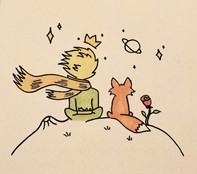
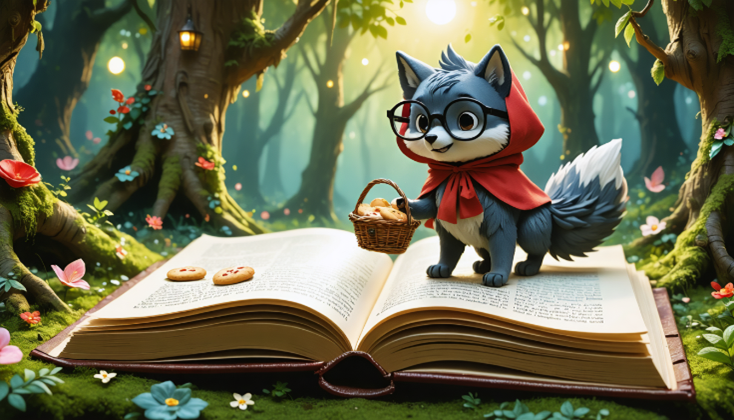
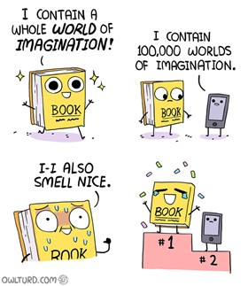
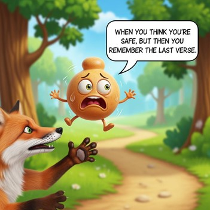
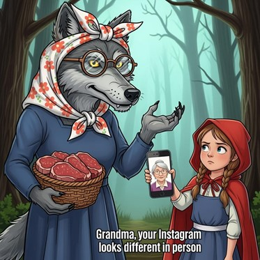

Приветствуем Вас, дорогие коллеги! Сфера "Книжный магазин" таит в себе много открытий.
Давайте познакомимся с интересными идеями для уроков из нашей сферы!
Топ-40 интересных идей:
1. Сделайте подборку онлайн-квестов с применением книг. Рассмотрим пример по изучению кибербезопасности. Пройдите 7 этап квеста "Кибербезопасность в сказках"
2. Принести в класс книги по английскому или информационным технологиям, спрятать в разные места. Дети их будут искать, следуя подсказкам.
3. Обсудить с детьми самую впечатляющую книгу, прочитанную в их жизни или на каникулах.
4. Провести мастер-класс по созданию собственных книг с применением изучаемых технологий.
5. Организовать дискуссию в виде игры между командами "Защитники книг" и "Противники книг".
6. Включить на занятии аудиокнигу по теме занятия и задать детям интересный вопрос.
7. Организовать демонстрацию аудиокниги, созданной ребенком по определенной теме занятия.
8. Организовывать чтение вслух с паузой преподавателя. Например, следующим читает тот, у кого короче имя.
9. Попросите детей написать рецензии на свои любимые книги с помощью изучаемых технологий.
10. Позвольте детям создать выставку своих любимых книг.
11. Организуйте иллюстрации для книг.
12. Подберите игры на основе известных книг, настольные игры, викторины с интересными фактами.
13. Организуйте буккроссинг (книжный обмен).
14. Организуйте группы в социальных сетях с обзорами на книги.
15. Преподавателям вводить в практику периодические обзоры на книги с необычными фактами.
16. Советовать определенные книжные магазины.
17. Советовать книги детям, связанные с вашей профессиональной областью.
18. Обсудить с детьми, как они видят рекламу книг и чтения.
19. Показать студентам примеры успешных людей, которые много читали.
20. Рассказать детям о плюсах чтения: развитие словарного запаса и воображения, формирование нейронных связей, распространение интересной информации.
21. Создание книжного магазина на уроке
Организуйте ролевую игру, где ученики будут продавцами и покупателями. Они смогут практиковать фразы для покупки книг, задавать вопросы о жанрах, авторах и ценах.
Организуйте ролевую игру, где ученики будут продавцами и покупателями. Они смогут практиковать фразы для покупки книг, задавать вопросы о жанрах, авторах и ценах.
Can I help you find something?
Do you have this book in stock?
Where are the fiction books?
I'm looking for a bestseller.
Could you recommend a good book?
How much does this book cost?
Do you have this book in stock?
Where are the fiction books?
I'm looking for a bestseller.
Could you recommend a good book?
How much does this book cost?
22. Викторины и игры по книгам
Используйте книги из магазина для проведения викторин, кроссвордов или игр типа "угадай книгу по описанию". Это сделает обучение более увлекательным.
Используйте книги из магазина для проведения викторин, кроссвордов или игр типа "угадай книгу по описанию". Это сделает обучение более увлекательным.
Cinderella
A kind girl named Cinderella is treated badly by her stepmother. With help from her fairy godmother, she goes to the ball and finds her happiness.
Little Red Riding Hood A girl in a red hood visits her grandma. She meets a sneaky wolf who tries to trick her, but she is brave and gets help to stay safe.
Little Red Riding Hood A girl in a red hood visits her grandma. She meets a sneaky wolf who tries to trick her, but she is brave and gets help to stay safe.
Sleeping Beauty
A princess is cursed to sleep for many years. A brave prince finds her, kisses her, and she wakes up to live happily ever after.
Snow White and the Seven Dwarfs Snow White hides with seven little dwarfs to escape her evil stepmother. With their help, she stays safe and finds true friends.
Snow White and the Seven Dwarfs Snow White hides with seven little dwarfs to escape her evil stepmother. With their help, she stays safe and finds true friends.
The Three Little Pigs
Three pigs build houses of different materials. The big bad wolf tries to blow them down, but only the strong house keeps everyone safe.
Puss in Boots A clever cat helps his poor owner become rich and happy by using tricks and smart ideas.
Puss in Boots A clever cat helps his poor owner become rich and happy by using tricks and smart ideas.
The Little Mermaid
A mermaid girl dreams of being human. She makes sacrifices to be with the prince she loves.
Alice in Wonderland Alice falls into a strange, magical world. She has many adventures and meets funny creatures.
Alice in Wonderland Alice falls into a strange, magical world. She has many adventures and meets funny creatures.
The Little Prince
A little boy from another planet teaches us about love, friendship, and seeing with our hearts.
A little boy from another planet teaches us about love, friendship, and seeing with our hearts.
23. Использование иллюстраций и обложек
Обсуждайте обложки книг, иллюстрации — это помогает развивать навыки описания внешнего вида предметов и визуального восприятия.
Обсуждайте обложки книг, иллюстрации — это помогает развивать навыки описания внешнего вида предметов и визуального восприятия.

This is a drawing of the Little Prince sitting on his tiny planet with his fox. He is looking at the stars, a planet, and a crown above his head. There is also a flower on his planet. It shows how he feels peaceful and happy, dreaming about the universe.
This is a drawing of the Little Prince sitting on his tiny planet with his fox. He is looking at the stars, a planet, and a crown above his head. There is also a flower on his planet. It shows how he feels peaceful and happy, dreaming about the universe.
24. Создай свою смешную обложку
Пусть ученики нарисуют или сделают коллажи с юмористическими обложками известных книг или придуманных ими книг, а затем расскажут о них на английском.
Пусть ученики нарисуют или сделают коллажи с юмористическими обложками известных книг или придуманных ими книг, а затем расскажут о них на английском.

25.Создание мемов на основе книг
Попросите учеников придумать забавные мемы, связанные с сюжетами, персонажами или обложками книг из магазина. Например, использовать популярные шаблоны мемов и вставить туда цитаты или ситуации из книг.
Попросите учеников придумать забавные мемы, связанные с сюжетами, персонажами или обложками книг из магазина. Например, использовать популярные шаблоны мемов и вставить туда цитаты или ситуации из книг.

26.Обсуждение мемов на английском
Покажите ученикам несколько популярных английских мемов и попросите их объяснить смысл, перевести или адаптировать их под контекст книг. Это поможет развивать навыки понимания юмора и расширять словарный запас.
Покажите ученикам несколько популярных английских мемов и попросите их объяснить смысл, перевести или адаптировать их под контекст книг. Это поможет развивать навыки понимания юмора и расширять словарный запас.
27. Мем-отзывы о книгах
Пусть ученики создадут мемы, которые выражают их мнение о прочитанных книгах или жанрах. Например, "Когда ты начинаешь читать новую книгу и не можешь остановиться" — с подходящей картинкой.
Пусть ученики создадут мемы, которые выражают их мнение о прочитанных книгах или жанрах. Например, "Когда ты начинаешь читать новую книгу и не можешь остановиться" — с подходящей картинкой.


28. Мем-игра "Угадай книгу"
Показывайте мемы, связанные с определёнными книгами или персонажами, а ученики должны угадать название книги или героя по изображению и подписи.
Показывайте мемы, связанные с определёнными книгами или персонажами, а ученики должны угадать название книги или героя по изображению и подписи.
29. Создание собственного мем-газеты или презентации
Объедините лучшие мемы в презентацию или мини-газету на английском языке, посвящённую книгам и чтению. Это будет весёлым итогом урока.
Объедините лучшие мемы в презентацию или мини-газету на английском языке, посвящённую книгам и чтению. Это будет весёлым итогом урока.
30. Интерактивное голосование
Попросите учеников выбрать самый смешной мем из нескольких вариантов, связанных с книгами, и обсудить их на английском.
Попросите учеников выбрать самый смешной мем из нескольких вариантов, связанных с книгами, и обсудить их на английском.
31. Создавайте эмоджи
Пусть ученики добавляют эмоджи к своим цитатам из книг, чтобы подчеркнуть настроение или смысл. Например, использовать для смешных ситуаций или для книжных тем. Объясняйте смысл через эмоджи Попросите учеников объяснить содержание книги или персонажа, используя только эмоджи. Это развивает навыки описания и понимания на английском.
Пусть ученики добавляют эмоджи к своим цитатам из книг, чтобы подчеркнуть настроение или смысл. Например, использовать для смешных ситуаций или для книжных тем. Объясняйте смысл через эмоджи Попросите учеников объяснить содержание книги или персонажа, используя только эмоджи. Это развивает навыки описания и понимания на английском.
32. Используйте эмоджи в описаниях книг
При создании отзывов или рекомендаций о книгах добавляйте эмоджи, чтобы сделать их более выразительными и привлекательными.
При создании отзывов или рекомендаций о книгах добавляйте эмоджи, чтобы сделать их более выразительными и привлекательными.
33. Создавайте эмоджи-истории
Ученики могут придумать короткую историю или ситуацию из книги, используя только эмоджи, а остальные должны угадать сюжет и назвать книгу на английском.
Ученики могут придумать короткую историю или ситуацию из книги, используя только эмоджи, а остальные должны угадать сюжет и назвать книгу на английском.
34. Обучающие карточки с эмоджи
Создавайте карточки с изображениями книг и соответствующими им эмоджи — это поможет запомнить жанры, персонажей или темы.
Создавайте карточки с изображениями книг и соответствующими им эмоджи — это поможет запомнить жанры, персонажей или темы.
35. Эмоджи-игры "Угадай книгу"
Используйте последовательности эмоджи для описания сюжета книги (например, — Гарри Поттер), а ученики должны угадать название. Добавление эмоджи делает уроки более динамичными и визуально привлекательными, помогает лучше понять юмор и эмоции, а также способствует развитию креативности! Смотреть видео
Используйте последовательности эмоджи для описания сюжета книги (например, — Гарри Поттер), а ученики должны угадать название. Добавление эмоджи делает уроки более динамичными и визуально привлекательными, помогает лучше понять юмор и эмоции, а также способствует развитию креативности! Смотреть видео
36. Студенты пишут короткие описания вымышленных книг, которые должны быть очень серьёзными, но при этом звучать очень смешно (например, "Как стать миллионером за один день — секреты для ленивых").
Можно устроить мини-читку с драматическим чтением и смехом.
37. "Самая глупая рекомендация продавца"
Разыграть сценки, где продавец советует клиенту самую нелепую книгу (например, "Книга о том, как научиться говорить с овощами").Студенты могут придумывать свои советы и реакции клиента.
Разыграть сценки, где продавец советует клиенту самую нелепую книгу (например, "Книга о том, как научиться говорить с овощами").Студенты могут придумывать свои советы и реакции клиента.
38. "Книжный магазин с необычными разделами"
Создайте список разделов магазина с юмористическими названиями: "Книги для тех, кто хочет стать супергероем", "Лучшая литература для ленивых", "Книги о том, как не читать книги".Студенты могут придумывать книги для каждого раздела и рассказывать о них.
Создайте список разделов магазина с юмористическими названиями: "Книги для тех, кто хочет стать супергероем", "Лучшая литература для ленивых", "Книги о том, как не читать книги".Студенты могут придумывать книги для каждого раздела и рассказывать о них.
39. " Пусть студенты придумали смешные ситуации или анекдоты и изобразят их в виде комикса. Например, "Книга, которая оживает" или "Покупатель, который хочет купить книгу о том, как стать невидимым".
Можно предложить им придумать персонажей — продавца-шутника и покупателя с забавными запросами.
40. Создавайте комиксы как задание на уроке
Попросите студентов придумать короткий комикс (от 2 до 4 кадров). В конце можно устроить мини-выставку или голосование за самый смешной комикс. Вставляйте популярные мемы или смешные картинки в свои комиксы для усиления юмористического эффекта.
Попросите студентов придумать короткий комикс (от 2 до 4 кадров). В конце можно устроить мини-выставку или голосование за самый смешной комикс. Вставляйте популярные мемы или смешные картинки в свои комиксы для усиления юмористического эффекта.
Книжный магазин — удивительное место, и каждый житель-книга в нем уникален. Исследуйте мир книг и открывайте для себя новое!
Хотите прогуляться в галерею удивительных книг?
Узнай больше!
Хотите узнать больше о книжных магазинах? Приходите в Enjoy Pro!